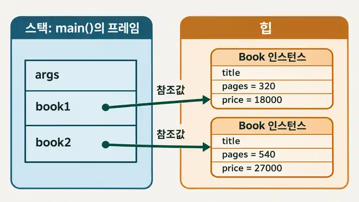
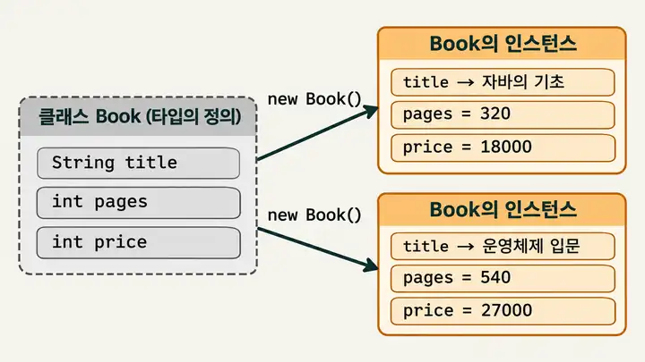
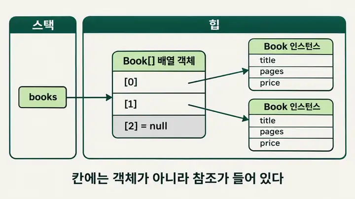

자바 기본편 / 01회
클래스와 데이터
클래스가 새로운 타입을 정의한다는 것에서 출발해, new가 힙에 객체를 만들고 참조값을 돌려주는 과정과 객체 배열이 참조의 배열인 이유를 바이트코드로 따라간다.
오늘 끝나면 할 수 있는 것
- 낱개 변수나 병렬 배열로 데이터를 다룰 때 무엇이 깨지기 쉬운지 설명하고, 관련된 데이터를 클래스로 묶어 새 타입으로 정의할 수 있다.
new Book()한 줄에서 힙 할당, 기본값 초기화, 생성자 호출, 참조값 반환이 어떤 순서로 일어나는지를new·dup·invokespecial·astore바이트코드와 함께 설명할 수 있다.- 변수에 들어 있는 것이 객체가 아니라 참조값이라는 사실을 메모리 그림으로 그리고,
==와 출력 결과(Book@…)를 그 그림으로 해석할 수 있다. - 필드의 기본값이 타입별로 무엇인지, 필드 초기화 식이 언제 실행되는지 말할 수 있다.
new Book[2]직후의 메모리 상태를 그리고, 객체 배열이 "참조의 배열"이라는 것을 근거로NullPointerException의 원인을 짚을 수 있다.
핵심 강의 → 핵심 요약 → 실무 재판단 → 적용 연습 → 이해 확인
01 핵심 강의
이 강의의 차례 · 소제목 14개
낱개 변수로는 "책 한 권"을 표현할 수 없다
도서관의 책 두 권을 프로그램에 담는다고 하자. 책마다 제목, 쪽수, 가격이 있다. 자바 입문에서 배운 도구만 쓰면 변수를 여섯 개 선언하게 된다.
public class LibraryMain1 {
public static void main(String[] args) {
String book1Title = "자바의 기초";
int book1Pages = 320;
int book1Price = 18000;
String book2Title = "운영체제 입문";
int book2Pages = 540;
int book2Price = 27000;
System.out.println(book1Title + " " + book1Pages + "쪽 " + book1Price + "원");
System.out.println(book2Title + " " + book2Pages + "쪽 " + book2Price + "원");
}
}자바의 기초 320쪽 18000원
운영체제 입문 540쪽 27000원동작은 한다. 하지만 이 코드 어디에도 "책"은 없다. 컴파일러가 아는 것은 String 변수 두 개와 int 변수 네 개가 있다는 사실뿐이다. book1Title과 book1Pages가 같은 책에 속한다는 것은 변수 이름의 앞부분을 읽는 사람만 안다. 책이 한 권 늘면 변수 세 개와 출력문 한 줄을 손으로 복사해야 하고, 책의 속성이 하나 늘면(예: 저자) 모든 책마다 변수를 하나씩 더해야 한다. 실수로 book1Title 옆에 book2Price를 출력해도 타입이 맞으니 컴파일러는 아무 말도 하지 않는다.
배열을 쓰면 반복은 줄일 수 있다.
public class LibraryMain2 {
public static void main(String[] args) {
String[] titles = {"자바의 기초", "운영체제 입문"};
int[] pages = {320, 540};
int[] prices = {18000, 27000};
for (int i = 0; i < titles.length; i++) {
System.out.println(titles[i] + " " + pages[i] + "쪽 " + prices[i] + "원");
}
}
}출력은 같고, 책이 100권이 되어도 반복문은 그대로다. 그러나 묶는 방향이 어긋나 있다. 배열은 "제목들", "쪽수들", "가격들"을 묶었지 "한 권의 책"을 묶지 않았다. 세 배열의 같은 인덱스가 같은 책이라는 약속은 여전히 프로그래머의 머릿속에만 있다. prices만 정렬하거나 titles에서만 한 칸을 지우면 그 순간부터 모든 책의 정보가 어긋나는데, 이것 역시 컴파일 오류가 아니다. 책 한 권을 메서드에 넘기려면 값 세 개를 따로 넘기거나, 배열 세 개와 인덱스를 함께 넘겨야 한다.
정리하면 문제는 두 가지다. 첫째, 함께 다녀야 할 데이터가 흩어져 있다. 둘째, 그 묶음에 이름이 없어서 컴파일러가 검사해 줄 수 없다. 필요한 것은 "제목, 쪽수, 가격을 한 덩어리로 가진 것"을 프로그램 안에서 하나의 값처럼 다루는 방법이고, 그 덩어리의 종류에 이름을 붙여 "이 변수는 책을 가리킨다"는 사실을 컴파일러가 알게 하는 방법이다. 자바에서 그 수단이 클래스(class)다.
클래스는 새로운 타입을 정의한다
타입(type)은 "어떤 값들이 있고, 그 값으로 무엇을 할 수 있는가"를 정한 것이다. int라는 타입은 32비트 정수 값들의 집합과 그 위의 덧셈·비교 같은 연산을 뜻한다. 자바가 미리 정해 둔 기본형(primitive type)은 여덟 개(byte, short, int, long, char, float, double, boolean)뿐이고, 여기에 "책"은 없다. 언어가 세상의 모든 개념을 미리 타입으로 넣어 둘 수는 없으므로, 프로그래머가 직접 타입을 정의할 수단이 있어야 한다.
클래스 선언이 바로 그 수단이다. JLS는 타입을 기본형과 참조형(reference type) 두 종류로 나누고(§4.1), 참조형의 한 갈래로 클래스 타입(class type)을 든다(§4.3). 클래스를 하나 선언하면 그 이름이 곧 새 타입의 이름이 되어, int나 String을 쓰던 자리(변수 선언, 매개변수, 반환 타입, 배열의 구성 요소 타입)에 그대로 쓸 수 있다. 그래서 클래스를 흔히 사용자 정의 타입(user-defined type)이라고 부른다.
public class Book {
String title;
int pages;
int price;
}중괄호 안에 선언한 변수 세 개가 필드(field)다. JLS §8.3의 표현으로는 "클래스의 변수는 필드 선언으로 도입된다". 필드는 클래스의 구성원(member)이어서 멤버 변수(member variable)라고도 부른다. 메서드 안에서 선언하는 지역 변수와 문법은 같아 보이지만 위치가 다르고, 뒤에서 보듯 만들어지는 시점과 저장되는 곳도 다르다. 클래스 이름은 관례상 대문자로 시작하는 낙타 표기(Book, LibraryMember)를 쓴다.
여기서 놓치기 쉬운 점이 있다. 이 선언은 책을 한 권도 만들지 않는다. Book 선언이 말하는 것은 "앞으로 Book 타입의 것이 만들어지면, 그것은 title, pages, price라는 변수를 하나씩 가진다"는 규칙뿐이다. int라는 타입이 있다고 해서 정수 변수가 생기지 않는 것과 같다. 실제 책 한 권에 해당하는 메모리는 프로그램이 실행되다가 new Book()을 만날 때 비로소 생긴다.
소스 파일과 클래스 파일
프로젝트에 Book.java와 이를 사용하는 BookMain.java를 따로 두고 컴파일하면 Book.class와 BookMain.class가 각각 만들어진다. 클래스 파일은 소스 파일 단위가 아니라 클래스 단위로 생긴다. JLS §7.6은 패키지를 파일 시스템에 저장하는 환경에서, public 클래스이거나 다른 소스 파일에서 참조되는 클래스는 "클래스 이름 + 확장자" 파일에 있어야 한다는 제한을 구현이 둘 수 있다고 정한다. javac가 public class Book을 Book.java에 두라고 요구하는 근거가 이것이고, 같은 절은 실무에서는 클래스마다 파일을 따로 두는 경우가 많다고 덧붙인다.
컴파일된 Book.class를 javap로 열어 보면 컴파일러가 이 타입을 어떻게 기록했는지 보인다.
Compiled from "Book.java"
public class Book {
java.lang.String title;
int pages;
int price;
public Book();
}필드 세 개가 이름과 타입으로 기록되어 있고, 소스에 쓰지 않은 public Book();이 하나 추가되어 있다. 생성자(constructor)를 하나도 선언하지 않으면 컴파일러가 기본 생성자를 암묵적으로 선언하기 때문이다(JLS §8.8.9). 생성자는 04회의 주제이므로 지금은 "객체를 만들 때 실행되는 초기화 코드가 클래스마다 적어도 하나 있다"는 것만 기억해 두자. BookMain이 실행되다가 Book이 처음 필요해지는 순간 JVM은 Book.class를 찾아 읽어 들인다. 클래스가 로딩되어 어디에 놓이는지는 06회에서 JVM 메모리 구조 전체와 함께 다룬다.
객체를 만들고 사용하기: new와 점(.)
타입을 정의했으니 그 타입의 값을 만들어 쓸 차례다.
public class BookMain {
public static void main(String[] args) {
Book book1 = new Book();
book1.title = "자바의 기초";
book1.pages = 320;
book1.price = 18000;
Book book2 = new Book();
book2.title = "운영체제 입문";
book2.pages = 540;
book2.price = 27000;
System.out.println(book1.title + " " + book1.pages + "쪽 " + book1.price + "원");
System.out.println(book2.title + " " + book2.pages + "쪽 " + book2.price + "원");
}
}자바의 기초 320쪽 18000원
운영체제 입문 540쪽 27000원Book book1 = new Book(); 한 줄에는 서로 다른 일 세 가지가 들어 있다. Book book1은 Book 타입의 지역 변수를 선언한다. new Book()은 Book 타입의 객체를 하나 만든다. =는 new가 내놓은 값을 변수에 저장한다. 세 가지를 따로 떼어 Book book1;과 book1 = new Book(); 두 줄로 써도 뜻은 같다.
이렇게 만들어진 것을 객체(object) 또는 인스턴스(instance)라고 한다. book1.title의 점(.)은 "book1이 가리키는 객체로 가서 그 안의 title 필드"라는 뜻이다. book1과 book2는 같은 Book 타입이지만 서로 다른 객체를 가리키므로, book1.price와 book2.price는 이름만 같은 별개의 변수다. 이제 제목·쪽수·가격은 책 단위로 묶여 있고, 묶음에는 Book이라는 이름이 있어 컴파일러가 검사할 수 있다. book1.author처럼 없는 필드를 쓰거나 book1.pages = "많음"처럼 타입이 맞지 않는 값을 넣으면 컴파일 단계에서 걸린다.
new가 하는 일을 순서대로
new Book()은 문법으로는 식(expression)이다. 1 + 2가 계산되어 3이라는 값이 되듯, new Book()도 실행되어 하나의 값이 된다. JLS §15.9.4는 이 클래스 인스턴스 생성식(class instance creation expression)이 실행되는 순서를 정해 두었다. 먼저 새 인스턴스를 위한 공간을 할당하고, 공간이 부족하면 OutOfMemoryError를 던진다. 새 객체는 그 클래스와 모든 상위 클래스에 선언된 필드를 전부 가지며, 각 필드는 만들어지면서 기본값으로 초기화된다. 그다음 생성자의 인자를 왼쪽부터 평가하고 생성자를 호출한다. 식의 값은 "새로 만든 객체에 대한 참조"이고, 식이 평가될 때마다 새 객체가 만들어진다.
- 공간 할당힙에서 Book 인스턴스 하나를 담을 공간을 확보한다. 모자라면 OutOfMemoryError로 끝난다.
- 기본값 초기화새 객체의 모든 필드가 기본값이 된다. title은 null, pages와 price는 0이다.
- 생성자 실행인자가 있으면 먼저 평가한 뒤 생성자를 호출한다. 필드 초기화 식과 생성자 본문이 이때 실행된다.
- 참조값 반환new 식 전체의 값은 방금 만든 객체를 가리키는 참조값이다.
- 대입그 참조값이 지역 변수 book1에 복사된다. 이 단계는 new가 아니라 = 의 일이다.
공간을 할당하는 곳은 힙(heap)이다. JVMS §2.5.3은 힙을 "모든 클래스 인스턴스와 배열의 메모리가 할당되는 런타임 데이터 영역"으로 정의하고, 힙의 객체는 프로그램이 명시적으로 해제하지 않으며 가비지 컬렉터가 회수한다고 정한다. 반면 book1이라는 지역 변수는 main 메서드가 호출될 때 만들어진 스택 프레임(stack frame) 안에 있다. 자바 입문에서 배열을 다룰 때 본 구도와 같다. 변수는 스택에, 변수가 가리키는 실체는 힙에 있다.
main()의 스택 프레임 힙(heap)
+----------------------+
| args | +--[ Book 인스턴스 A ]-----+
| book1 = (A의 참조값) ------------> | title = (String의 참조값) ---> "자바의 기초"
| book2 = (B의 참조값) -------+ | pages = 320 |
+----------------------+ | | price = 18000 |
| +-------------------------+
|
| +--[ Book 인스턴스 B ]-----+
+----> | title = (String의 참조값) ---> "운영체제 입문"
| pages = 540 |
| price = 27000 |
+-------------------------+

5단계가 new의 일이 아니라는 점은 대입 없이 new Book();만 써 보면 알 수 있다. 이 문장도 컴파일되고 실행된다. 객체는 힙에 만들어지지만 참조값을 어디에도 저장하지 않았으므로 프로그램은 그 객체에 다시 닿을 방법이 없다. 이렇게 아무도 가리키지 않는 객체가 어떻게 되는지는 다음 회차에서 null, 가비지 컬렉션과 함께 다룬다.
바이트코드로 확인하기: new, dup, invokespecial
위 순서가 컴파일 결과에 어떻게 나타나는지 보자. 객체를 만들고 필드에 값을 넣었다 읽는 최소한의 코드다.
public class NewSteps {
public static void main(String[] args) {
Book book = new Book();
book.pages = 320;
int p = book.pages;
}
} 0: new #7 // class Book
3: dup
4: invokespecial #9 // Method Book."<init>":()V
7: astore_1
8: aload_1
9: sipush 320
12: putfield #10 // Field Book.pages:I
15: aload_1
16: getfield #10 // Field Book.pages:I
19: istore_2
20: returnJVM의 명령은 피연산자 스택(operand stack)에서 값을 꺼내 쓰고 결과를 다시 그 위에 올린다. 스택 프레임마다 지역 변수 배열과 피연산자 스택이 하나씩 있다는 것은 자바 입문에서 본 대로다. #7, #9 같은 숫자는 클래스 파일의 상수 풀(constant pool) 항목 번호로, 컴파일러가 매기는 값이어서 환경에 따라 달라질 수 있다. 중요한 것은 주석으로 보이는 내용, 곧 "Book이라는 클래스", "Book의 <init> 메서드"다. Book book = new Book(); 한 줄이 명령 네 개가 되었다.
| 위치 | 명령 | 실행 직후 피연산자 스택 | 일어난 일 |
|---|---|---|---|
| 0 | new #7 | [참조] | 힙에 Book 인스턴스의 공간을 잡고 필드를 기본값으로 만든다. 그 객체의 참조를 스택에 올린다. 생성자는 아직 실행되지 않았다. |
| 3 | dup | [참조, 참조] | 스택 맨 위의 값을 복제한다. 같은 객체를 가리키는 참조가 두 개가 된다. |
| 4 | invokespecial #9 | [참조] | 참조 하나를 꺼내 그 객체를 대상으로 생성자 Book.<init>()를 호출한다. |
| 7 | astore_1 | [] | 남은 참조를 꺼내 지역 변수 1번(book)에 저장한다. |
JVMS는 new 명령을 "가비지 컬렉션되는 힙에서 새 인스턴스의 메모리를 할당하고, 인스턴스 변수를 기본 초기값으로 초기화한 뒤, 그 인스턴스에 대한 참조를 피연산자 스택에 올린다"고 설명한다. 그리고 주석으로 덧붙인다. new 명령만으로는 인스턴스 생성이 끝나지 않으며, 인스턴스 초기화 메서드가 호출되어야 완료된다는 것이다. 인스턴스 초기화 메서드란 자바 소스의 생성자가 클래스 파일에서 갖는 모습으로, 이름은 언제나 <init>이다(JVMS §2.9.1). 이 이름은 자바 식별자로 쓸 수 없는 문자를 포함하므로 소스 코드에서 직접 호출할 방법이 없다.
dup이 왜 필요한지는 스택의 변화를 보면 분명하다. invokespecial은 호출 대상 객체의 참조를 스택에서 꺼내 소비한다. <init>은 반환값이 없는 메서드(디스크립터 ()V)라서 호출이 끝나도 스택에 아무것도 돌려놓지 않는다. 참조가 하나뿐이었다면 생성자를 호출한 뒤 스택이 비어, 변수에 저장할 참조가 남지 않는다. 그래서 컴파일러는 미리 하나를 복제해 둔다. 하나는 생성자에게 "이 객체를 초기화하라"고 넘기는 용도이고, 다른 하나는 new Book()이라는 식의 값으로 남는 용도다. 앞에서 본 new Book();처럼 값을 쓰지 않는 문장은 마지막 명령이 astore 대신 남은 참조를 버리는 pop으로 바뀔 뿐, 앞의 세 명령은 똑같다.
지역 변수 번호가 0이 아니라 1인 이유도 짚어 두자. main은 static 메서드이고, JVMS §2.6.1에 따르면 클래스 메서드를 호출할 때 매개변수는 지역 변수 0번부터 차례로 전달된다. 그래서 0번은 args이고, 메서드 안에서 처음 선언한 book이 1번, p가 2번이 된다. 생성자 Book.<init> 쪽의 바이트코드는 다음과 같다.
public Book();
0: aload_0
1: invokespecial #1 // Method java/lang/Object."<init>":()V
4: return생성자 안에서 지역 변수 0번에는 호출한 쪽이 dup으로 넘겨 준 참조, 곧 초기화할 객체 자신이 들어 있다. 기본 생성자가 하는 일은 그 참조를 가지고 상위 클래스 Object의 생성자를 호출하는 것뿐이다. 0번 지역 변수에 "자기 자신"이 들어오는 규칙은 03회에서 인스턴스 메서드와 this를 다룰 때, 상위 클래스 생성자 호출은 08회 상속에서 다시 만난다.
참조값이란 무엇인가
변수 book에 들어 있는 것은 객체가 아니다. JLS §4.3.1은 "객체는 클래스 인스턴스이거나 배열"이라고 정의한 뒤, 참조값(reference value, 줄여서 참조)을 "이 객체들을 가리키는 포인터, 그리고 아무 객체도 가리키지 않는 특별한 null 참조"라고 설명한다. 클래스 타입의 변수는 그 클래스(또는 하위 클래스)의 인스턴스에 대한 참조나 null 참조만 담을 수 있다(§4.12.2). 변수의 칸에는 객체를 찾아갈 수 있는 값 하나만 있고, 필드 세 개를 가진 본체는 힙에 있다.
참조값을 직접 출력해 보면 무엇이 나올까.
public class RefMain {
public static void main(String[] args) {
Book book1 = new Book();
Book book2 = new Book();
Book same = book1;
System.out.println(book1);
System.out.println(book2);
System.out.println(book1 == book2);
System.out.println(book1 == same);
}
}Book@15db9742
Book@6d06d69c
false
true앞의 두 줄은 참조값 자체가 아니라 Object.toString()이 만든 문자열이다. Javadoc에 따르면 이 메서드는 getClass().getName() + '@' + Integer.toHexString(hashCode())와 같은 문자열, 곧 클래스 이름과 @, 해시 코드의 16진수 표기를 돌려준다. 같은 문서는 이 출력이 시간이 지나거나 JVM을 다시 실행했을 때 같다는 보장이 없다고 적고 있다. 흔히 @ 뒤의 값을 메모리 주소라고 말하지만 명세 어디에도 그런 보장은 없다. hashCode()의 Javadoc이 요구하는 것은 한 번의 실행 동안 같은 객체에 대해 같은 정수를 돌려주는 것, 그리고 Object의 구현은 서로 다른 객체에 대해 가능한 한 서로 다른 정수를 돌려준다는 것뿐이다. 한편 HotSpot에는 살아 있는 객체를 다른 위치로 옮기는 가비지 컬렉터들이 있다(JEP 450의 "GC forwarding" 항목이 그 방식을 설명한다). 객체의 위치는 바뀔 수 있는데 해시 코드는 그대로여야 하므로, 이 값을 "지금 이 객체의 주소"로 읽어서는 안 된다. 서로 다른 객체를 구별하는 식별용 숫자 정도로 받아들이면 충분하다.
뒤의 두 줄이 더 중요하다. 참조 타입에 쓰는 ==는 두 참조값이 같은 객체를 가리키는지를 비교한다(JLS §15.21.3). book1과 book2는 new를 두 번 실행해 얻은 서로 다른 객체를 가리키므로, 필드 값이 전부 같더라도 false다. same에는 book1의 참조값을 복사해 넣었으므로 둘은 같은 객체를 가리키고 true다. 이때 객체는 여전히 두 개뿐이고, 한 객체를 가리키는 변수가 둘이 되었을 뿐이다. JLS도 "같은 객체에 대한 참조는 여러 개 있을 수 있다"고 적는다. 참조값을 복사했을 때 벌어지는 일은 02회 전체의 주제다.
참조값이 실제로 어떤 비트열인지는 명세가 정하지 않는다. JVMS §2.7은 "자바 가상 머신은 객체의 내부 구조를 특정하게 강제하지 않는다"고 하고, aconst_null 명령의 설명에는 null의 구체적인 값도 강제하지 않는다고 적혀 있다. 구현의 예를 하나 들면, 64비트 HotSpot은 기본 설정에서 참조를 64비트 포인터 그대로가 아니라 32비트 오프셋으로 저장한다(java 명령 문서의 -XX:-UseCompressedOops 항목). 자바 프로그램이 참조값으로 할 수 있는 일은 필드 접근, 메서드 호출, 형변환, instanceof, == 비교 같은 몇 가지로 정해져 있다(JLS §4.3.1). C의 포인터처럼 정수를 더해 옆 메모리를 가리키게 하는 연산은 문법에 없다. 프로그램이 참조값의 비트를 들여다볼 길이 없으므로, 내부 표현이 무엇이든 프로그램의 동작은 달라지지 않는다.
필드 접근: 점(.)은 getfield와 putfield가 된다
앞의 바이트코드에서 위치 8~19가 필드를 쓰고 읽는 부분이다. book.pages = 320;은 aload_1(지역 변수 1번의 참조를 스택에 올린다), sipush 320(정수 320을 올린다), putfield 세 명령이 된다. putfield는 스택에서 값과 참조를 꺼내, 그 참조가 가리키는 객체의 해당 필드에 값을 쓴다. int p = book.pages;는 aload_1, getfield, istore_2다. getfield는 참조를 꺼내 그 객체의 필드 값을 스택에 올리고, istore_2가 그 값을 지역 변수 2번에 저장한다. 소스 코드의 점 하나가 "참조를 따라가 객체 안의 한 칸을 읽거나 쓴다"는 명령 하나에 정확히 대응한다.
두 명령의 설명에는 공통된 문장이 있다. 꺼낸 참조가 null이면 NullPointerException을 던진다는 것이다. 따라갈 객체가 없으니 필드를 읽을 수도 쓸 수도 없다. 이 예외가 정확히 어느 시점에 발생하는지는 02회에서 자세히 본다.
putfield #10의 주석 Field Book.pages:I도 읽어 둘 만하다. "Book 클래스의, 이름이 pages이고 타입이 int(I)인 필드"라는 뜻이다. 여기에는 "객체의 시작에서 몇 바이트 떨어진 곳"이라는 정보가 없다. JVMS §3.8은 이 피연산자가 인스턴스 안에서의 필드 오프셋이 아니라 기호 참조(symbolic reference)이고, 실행 시점에 해석(resolution)되어 객체 안에서의 필드 위치가 결정된다고 설명한다. 컴파일러는 객체가 메모리에 어떻게 배치될지 모르고, 그것은 프로그램을 실행하는 JVM이 정한다.
title 필드에 대해서도 같은 구도가 한 번 더 나타난다. String은 기본형이 아니라 클래스다. 따라서 book1.title = "자바의 기초";가 Book 객체 안에 저장하는 것은 글자들이 아니라 String 객체를 가리키는 참조값이다. 글자를 담은 String 객체는 힙의 다른 자리에 있고, Book 객체의 title 칸은 그것을 가리킬 뿐이다. 객체의 필드가 다시 다른 객체를 가리키는 이 구조가 객체들을 서로 엮는 기본 방식이다.
필드의 기본값: 0, false, null
new의 두 번째 단계인 기본값 초기화를 직접 확인해 보자. 객체를 만든 뒤 아무 값도 넣지 않고 필드를 읽는다.
public class DefaultMain {
public static void main(String[] args) {
Book book = new Book();
System.out.println(book.title);
System.out.println(book.pages);
System.out.println(book.price);
}
}null
0
0JLS §4.12.5는 "프로그램의 모든 변수는 값이 사용되기 전에 값을 가져야 한다"는 원칙에서 출발해, 변수의 종류마다 그 첫 값이 어디서 오는지를 정한다. 인스턴스 변수(static이 아닌 필드), 클래스 변수(static 필드), 배열의 구성 요소는 만들어지는 순간 타입에 따른 기본값(default value)을 받는다.
| 타입 | 기본값 |
|---|---|
byte, short, int, long | 0 (long은 0L) |
float, double | 양의 0 (0.0f, 0.0d) |
char | 널 문자 '\u0000' |
boolean | false |
| 모든 참조 타입(클래스, 배열 등) | null |
표의 값은 모두 그 타입에서 "0에 해당하는 값"이다. 이 규칙 덕분에 새로 만든 객체의 필드에서 그 메모리를 예전에 쓰던 흔적이 읽히는 일은 없다. 정해지지 않은 값을 읽을 가능성을 언어 규칙으로 없앤 것이다. new 명령의 정의에 "인스턴스 변수를 기본 초기값으로 초기화한다"가 들어 있었던 것을 떠올리면, 이 초기화는 프로그래머가 요청하지 않아도 객체가 생길 때마다 반드시 일어난다.
다만 기본값이 곧 의미 있는 초기 상태인 것은 아니다. 가격이 0원인 책은 무료라는 뜻인지 아직 가격을 넣지 않았다는 뜻인지 구별되지 않는다. title이 null인 책은 제목이 빈 문자열인 책과도 다르다. 가리키는 String 객체가 아예 없는 상태여서, book.title.length()처럼 그 참조를 따라가려 하면 NullPointerException이 난다. 기본값은 "아직 아무도 값을 정하지 않았다"는 표시로 읽는 편이 정확하다. 객체가 만들어지는 즉시 의미 있는 값을 갖도록 강제하는 장치가 04회에서 배울 생성자다.
필드 초기화 식은 언제 실행되는가
필드 선언에 초기화 식을 붙일 수 있다. 도서 대출 기록을 나타내는 클래스에서 대출 기간의 기본을 14일로 두는 경우다.
public class Loan {
int days = 14;
int renewCount;
}new Loan()으로 만든 객체의 days는 14, renewCount는 0이다. 이때도 순서는 달라지지 않는다. 먼저 두 필드가 모두 0이 되고, 그 뒤에 생성자가 실행되면서 days에 14가 대입된다. JLS §12.5는 생성자를 처리하는 절차 안에서 상위 클래스 생성자 호출 다음에 "인스턴스 변수 초기화 식을 소스 코드에 적힌 순서대로 실행해 해당 변수에 대입한다"고 정한다. 컴파일 결과가 이 설명과 그대로 일치한다.
public Loan();
0: aload_0
1: invokespecial #1 // Method java/lang/Object."<init>":()V
4: aload_0
5: bipush 14
7: putfield #7 // Field days:I
10: return필드 초기화 식은 클래스 파일에서 별도의 장소에 저장되지 않고 생성자 <init> 안의 코드가 된다. Object의 생성자를 호출한 직후 자기 자신(aload_0)의 days 필드에 14를 넣는 putfield가 그것이다. renewCount에 0을 넣는 코드는 없다. 그 0은 new 명령이 공간을 할당하면서 이미 만들어 둔 값이기 때문이다.
지역 변수는 사정이 다르다. 지역 변수에는 기본값이 없어서, 값을 넣기 전에 읽으려 하면 컴파일 오류가 난다. 같은 "변수"인데 왜 규칙이 다른지는 02회의 "변수와 초기화"에서 다룬다.
HotSpot에서 객체 하나는 어떻게 생겼나
앞에서 보았듯 JVMS는 객체의 내부 구조를 정하지 않는다. 그래도 구현 하나를 들여다보면 "객체가 힙에 놓인다"는 말이 구체적인 그림이 된다. 이 절의 내용은 명세가 아니라 OpenJDK 21의 HotSpot이라는 한 구현의 이야기이고, 버전과 실행 옵션에 따라 달라진다. 프로그램이 여기에 의존해서는 안 되며, 머릿속 모델을 정확히 하려는 용도로만 읽자.
HotSpot은 힙의 객체마다 앞부분에 헤더(header)를 둔다. JEP 450은 헤더를 줄이는 실험적 기능을 JDK 24에 넣으면서 기존 구조를 설명하는데, Java 21의 객체가 바로 그 기존 구조다. 헤더는 마크 워드(mark word)와 클래스 워드(class word)로 나뉜다. 마크 워드는 기계 주소 크기(64비트 JVM에서 64비트)이고 해시 코드, 가비지 컬렉션이 쓰는 객체 나이, 락 상태를 나타내는 비트 등을 담는다. 클래스 워드는 이 객체가 어느 클래스의 인스턴스인지를 가리키는 포인터로, 기본으로 켜져 있는 압축 클래스 포인터를 쓰면 32비트다. 그래서 JEP 450의 표현대로 64비트 HotSpot의 객체 헤더는 설정에 따라 96비트(12바이트)에서 128비트(16바이트)를 차지한다.
헤더 뒤에 인스턴스 필드가 놓인다. Temurin 21(HotSpot, 64비트, 기본 옵션)에서 Book 인스턴스 1,000개를 만든 뒤 JDK에 들어 있는 jcmd <pid> GC.class_histogram 명령으로 클래스별 인스턴스 수와 바이트 수를 보면, Book은 1,000개에 24,000바이트로 나온다. 인스턴스 하나에 24바이트다. 같은 환경에서 필드의 위치(오프셋)를 조회하면 다음과 같은 배치가 나온다.
Book 인스턴스 하나 (Temurin 21 HotSpot, 64비트, 기본 옵션에서 관찰한 배치)
오프셋 크기 내용
------ ---- ---------------------------------------------------------
0 8 마크 워드 : 해시 코드, GC 나이, 락 상태 비트 등
8 4 클래스 워드 : 이 객체의 클래스(Book)를 가리키는 압축 포인터
12 4 pages : int
16 4 price : int
20 4 title : String 객체를 가리키는 압축 참조
------ ----
합계 24바이트
이 그림에서 읽을 것이 세 가지 있다. 첫째, 소스에서는 title을 맨 먼저 선언했지만 메모리에서는 맨 뒤에 놓였다. 필드의 배치 순서는 선언 순서가 아니라 JVM이 계산한다. JDK 15 릴리스 노트에도 인스턴스의 빈틈을 줄이도록 필드 배치 계산 방식을 바꿨다는 항목이 있다. 바이트코드가 필드를 오프셋이 아닌 이름으로 가리키는 덕분에 JVM은 이런 재배치를 마음대로 할 수 있다. 둘째, 객체 안에는 헤더와 필드 값만 있다. title 칸에는 4바이트짜리 참조가 있을 뿐 제목의 글자는 없고, 클래스의 코드(생성자나 메서드)도 객체마다 들어 있지 않다. 셋째, 모든 객체는 클래스 워드를 통해 자신의 클래스를 가리킨다. JEP 450의 설명대로 이 정보는 메서드 호출, 리플렉션, 타입 검사에 쓰인다. 실행 중에 "이 객체는 무슨 타입인가"를 물을 수 있는 근거가 객체 자신에게 들어 있는 것이다. 이 사실은 09회의 다형성에서 핵심이 된다.
클래스, 객체, 인스턴스: 용어 정리
세 낱말은 일상에서 뒤섞여 쓰이지만 가리키는 것이 조금씩 다르다. 클래스(class)는 타입의 정의다. 어떤 필드를 가지는지(그리고 다음 회차부터는 어떤 메서드를 가지는지)를 적은 것으로, 소스 코드에 한 번 쓰고 클래스 파일 하나로 컴파일된다. 객체(object)는 실행 중에 힙에 만들어진 실체다. JLS의 정의로는 "클래스 인스턴스이거나 배열"이므로, new Book()으로 만든 것도 new int[3]으로 만든 배열도 객체다.
인스턴스(instance)는 "어느 클래스로부터 만들어졌는가"라는 관계를 드러내고 싶을 때 쓰는 말이다. "book1이 가리키는 객체는 Book의 인스턴스다"처럼 클래스 이름과 함께 쓰는 것이 자연스럽다. 클래스로부터 객체를 만드는 일을 인스턴스화(instantiation)라고 하는데, JLS §12.5도 new 식이 평가되어 "클래스가 인스턴스화될 때" 새 인스턴스가 만들어진다고 표현한다. 필드를 인스턴스 변수라고 부르는 것도 같은 맥락이다. 인스턴스마다 하나씩 따로 있는 변수라는 뜻이다. 실무 대화에서는 객체와 인스턴스를 거의 같은 뜻으로 써도 문제가 없지만, 클래스와 객체는 반드시 구별해야 한다. 클래스는 하나이고, 객체는 new를 실행한 횟수만큼 있다.

배열 도입: 객체 배열은 참조의 배열이다
클래스를 도입해 책 한 권은 묶었지만, 책이 여러 권이면 book1, book2, book3처럼 변수가 책 수만큼 늘고 출력문도 그만큼 반복된다. 같은 타입의 값을 여럿 다루는 도구는 이미 알고 있다. 배열이다. 구성 요소의 타입이 Book인 배열을 만들면 된다.
public class ArrayMain {
public static void main(String[] args) {
Book[] books = new Book[2];
System.out.println(books[0]);
books[0] = new Book();
books[0].title = "자바의 기초";
books[0].pages = 320;
books[0].price = 18000;
books[1] = new Book();
books[1].title = "운영체제 입문";
books[1].pages = 540;
books[1].price = 27000;
for (int i = 0; i < books.length; i++) {
System.out.println(books[i].title + " " + books[i].pages + "쪽 " + books[i].price + "원");
}
}
}null
자바의 기초 320쪽 18000원
운영체제 입문 540쪽 27000원첫 줄의 null이 이 절의 핵심이다. new Book[2]는 Book을 두 개 만들지 않는다. 만들어지는 것은 "Book 타입 변수 두 칸을 가진 배열 객체" 하나다. JLS §10은 배열을 이름 없는 변수(구성 요소, component)들을 담은 객체로 정의하고, §4.12.5에 따라 그 칸들은 기본값을 받는다. 칸의 타입이 클래스 타입 Book이므로 칸에 들어갈 수 있는 것은 Book 인스턴스의 참조이거나 null이고, 기본값은 null이다. 지역 변수 Book book1이 참조를 담는 것과 똑같은 규칙이 배열의 칸에 적용된 것일 뿐, 배열만을 위한 특별한 규칙은 없다.
(1) Book[] books = new Book[2]; 직후
스택 힙
books -----------> +--[ Book[] 배열 객체, length = 2 ]--+
| [0] = null |
| [1] = null |
+-----------------------------------+
(Book 인스턴스는 아직 하나도 없다)
(2) 두 칸에 new Book()의 결과를 넣고 필드를 채운 뒤
스택 힙
books -----------> +--[ Book[] 배열 객체, length = 2 ]--+
| [0] = (A의 참조값) ----------------------> Book 인스턴스 A (pages=320, price=18000, ...)
| [1] = (B의 참조값) ----------------------> Book 인스턴스 B (pages=540, price=27000, ...)
+-----------------------------------+

그래서 배열만 만들고 곧바로 칸의 필드를 쓰는 코드는 실패한다. 객체 배열을 처음 쓸 때 가장 흔히 만나는 오류다.
Book[] books = new Book[2];
books[0].price = 18000; // books[0]은 null이다Exception in thread "main" java.lang.NullPointerException: Cannot assign field "price" because "<local1>[0]" is null메시지가 원인을 그대로 말해 준다. price 필드에 값을 쓰려 했는데 지역 변수 1번(books)의 [0]이 null이라는 것이다. 배열 객체는 있지만 그 칸이 가리키는 Book 인스턴스가 없다. 고치려면 필드를 쓰기 전에 books[0] = new Book();으로 칸에 참조를 넣어야 한다. 메시지에 변수 이름 대신 <local1>이 나온 이유와 이 메시지의 구조는 02회에서 설명한다.
바이트코드에서도 참조의 배열이다
public class ArraySteps {
public static void main(String[] args) {
Book[] books = new Book[2];
books[0] = new Book();
books[0].price = 18000;
}
} 0: iconst_2
1: anewarray #7 // class Book
4: astore_1
5: aload_1
6: iconst_0
7: new #7 // class Book
10: dup
11: invokespecial #9 // Method Book."<init>":()V
14: aastore
15: aload_1
16: iconst_0
17: aaload
18: sipush 18000
21: putfield #10 // Field Book.price:I
24: returnnew Book[2]는 anewarray 명령이 된다. JVMS는 이 명령을 "참조의 새 배열을 만든다"고 설명하고, 새 배열의 모든 구성 요소가 참조 타입의 기본값인 null로 초기화된다고 명시한다. 여기에는 Book.<init> 호출이 없다. 생성자가 한 번도 실행되지 않았으니 Book 인스턴스도 없다. books[0] = new Book();에서는 배열 참조(aload_1)와 인덱스(iconst_0)를 스택에 올리고, 익숙한 new·dup·invokespecial로 객체를 만든 뒤, aastore가 그 참조를 배열의 0번 칸에 저장한다. 이름의 첫 글자 a는 참조를 다루는 명령이라는 표시다.
books[0].price = 18000;은 두 번 따라간다. aload_1로 배열의 참조를 올리고, aaload가 배열의 0번 칸에 들어 있는 참조를 꺼내 올리고, putfield가 그 참조가 가리키는 객체의 price에 값을 쓴다. 변수에서 배열로 한 번, 배열 칸에서 객체로 한 번이다. 두 번 중 어느 쪽 참조가 null이어도 NullPointerException이 난다. books 자체가 null이면 aaload에서, 칸이 null이면 putfield에서다.
크기를 재 봐도 같은 결론이 나온다. 앞 절과 같은 환경에서 Book 인스턴스 1,000개와 그 참조를 담은 길이 1,000의 Book[]을 만들고 jcmd <pid> GC.class_histogram으로 보면, Book 인스턴스는 모두 24,000바이트인데 배열 객체는 4,016바이트다. 배열이 책 1,000권을 품고 있다면 24,000바이트보다 작을 수 없다. 4,016바이트는 칸 하나에 압축된 참조 4바이트씩 4,000바이트에, 배열 자신의 헤더와 길이 정보 16바이트를 더한 값이다. 이 수치 역시 HotSpot이라는 구현의 값이지만, "칸에는 참조가 들어 있다"는 구조 자체는 언어 명세가 정한 것이다.
이 구조에서 따라 나오는 사실 하나를 더 확인하자. books[0] = book1;처럼 이미 있는 변수의 값을 칸에 넣으면 객체가 배열 안으로 옮겨지는 것도, 복사되는 것도 아니다. book1에 든 참조값이 칸에 복사될 뿐이다. 그 뒤로는 book1과 books[0]이 같은 객체를 가리키므로 books[0].price = 100;을 실행하고 book1.price를 읽으면 100이 나온다. "배열에 객체를 넣는다"는 말은 편한 줄임말이고, 정확히는 "배열의 칸에 객체의 참조를 넣는다"이다.
배열 리팩터링: 초기화 목록과 향상된 for
앞의 ArrayMain은 동작하지만 books[0], books[1]이라는 인덱스가 코드 곳곳에 반복된다. 배열을 선언하면서 값을 나열하는 배열 초기화(array initializer)와 향상된 for 문을 쓰면 인덱스를 거의 없앨 수 있다. 합계를 구하는 기능도 함께 넣어 보자.
public class LibraryMain3 {
public static void main(String[] args) {
Book book1 = new Book();
book1.title = "자바의 기초";
book1.pages = 320;
book1.price = 18000;
Book book2 = new Book();
book2.title = "운영체제 입문";
book2.pages = 540;
book2.price = 27000;
Book[] books = {book1, book2};
int total = 0;
for (Book book : books) {
System.out.println(book.title + " " + book.pages + "쪽 " + book.price + "원");
total += book.price;
}
System.out.println("합계: " + total + "원");
}
}자바의 기초 320쪽 18000원
운영체제 입문 540쪽 27000원
합계: 45000원Book[] books = {book1, book2};는 길이 2의 배열을 만들고 중괄호 안의 식을 차례로 계산해 각 칸의 초기값으로 넣는다(JLS §10.6). 식 book1의 값은 참조값이므로 0번 칸에는 book1과 같은 참조가 들어간다. 중괄호만 쓰는 형태는 변수 선언과 함께일 때만 허용되고, 이미 선언한 변수에 대입할 때는 books = new Book[]{book1, book2};처럼 타입을 밝혀야 한다. 배열의 길이는 나열한 식의 개수로 정해지므로 책을 추가할 때 숫자를 따로 고칠 일이 없다.
향상된 for 문 for (Book book : books)도 새로운 동작이 아니라 줄여 쓴 표기다. JLS §14.14.2는 배열에 대한 향상된 for 문을 인덱스를 쓰는 기본 for 문으로 정의한다. 풀어 쓰면 다음과 같다.
for (int i = 0; i < books.length; i++) {
Book book = books[i];
// 반복문의 본문
}정확히는 배열 식 books를 한 번만 평가해 숨은 변수에 담아 두고 그것으로 반복한다는 점만 다르다. 반복 변수 book은 매 회전마다 새로 만들어지는 지역 변수이고, 배열 칸의 참조값을 복사해 받는다. 이 사실에서 두 가지 동작이 갈린다. 본문에서 book.price = 0;을 실행하면 참조를 따라가 객체를 고치므로 배열을 통해 봐도 값이 바뀌어 있다. 반면 book = new Book();을 실행하면 지역 변수 book이 새 객체를 가리키게 될 뿐 배열의 칸은 그대로다. 향상된 for 문으로는 배열의 칸에 든 참조 자체를 바꿀 수 없고, 그럴 때는 인덱스가 있는 for 문으로 books[i] = …를 써야 한다.
이제 처음의 문제로 돌아가 비교해 보자. 책에 저자라는 속성을 추가해야 한다면, 낱개 변수 방식에서는 책마다 변수를 하나씩 더해야 했고 병렬 배열 방식에서는 배열을 하나 더 만들어 인덱스를 맞춰야 했다. 지금은 Book 클래스에 String author; 한 줄을 더하면 모든 책이 저자 칸을 갖는다. 책을 한 권 더 다루려면 객체를 하나 만들어 배열 초기화 목록에 더하면 되고, 출력과 합계 코드는 손대지 않는다. 데이터의 구조를 아는 곳이 클래스 한 곳으로 모였기 때문이다.
자주 하는 오해
- "변수 book1에 책 객체가 들어 있다." 변수에는 참조값만 있다. 객체는 힙에 있고, 한 객체를 여러 변수가 가리킬 수 있다.
Book same = book1;은 객체를 복사하지 않는다. - "클래스를 선언하면 메모리에 책이 생긴다." 클래스 선언은 타입을 정의할 뿐이다. 인스턴스는
new가 실행될 때마다 하나씩 만들어진다. - "
new Book[2]는 Book 두 개를 만든다." 만들어지는 것은 null이 든 칸 두 개짜리 배열 객체 하나다.Book인스턴스는new Book()을 실행한 만큼만 있다. - "
Book@15db9742의 뒷부분은 메모리 주소다." 해시 코드의 16진수 표기다. Javadoc은 이 값이 주소라고 말하지 않으며, 실행 환경에 따라 달라질 수 있다. - "필드는 선언한 순서대로 메모리에 놓인다." 명세는 객체의 내부 구조를 정하지 않는다. HotSpot은 필드 배치를 스스로 계산하고, 위에서 본 것처럼 선언 순서와 다를 수 있다.
- "필드에 값을 안 넣으면 쓰레기 값이 들어 있다." 필드와 배열의 칸은 만들어질 때 반드시 기본값이 된다. 값을 넣지 않고 읽을 수 없는 것은 지역 변수다.
이 지식이 다시 쓰이는 곳
이번 회차의 그림, 곧 "스택의 변수는 참조를 들고, 힙의 객체가 필드를 가진다"는 이 권 전체의 바탕이다. 02회에서는 참조값을 다른 변수에 대입하거나 메서드에 넘길 때 무엇이 복사되는지, null과 가비지 컬렉션이 이 그림에서 어떻게 설명되는지를 다룬다. 03회에서는 데이터만 있던 클래스에 메서드를 넣고, 메서드가 "어느 객체의 필드를 다룰지"를 생성자에서 본 것과 같은 0번 지역 변수로 전달받는 방식을 본다. 04회의 생성자는 오늘 본 <init>의 본문을 직접 쓰는 일이고, 06회에서는 스택과 힙에 메서드 영역을 더해 JVM 메모리 구조 전체를 정리한다.
이 권을 벗어나도 같은 그림이 계속 쓰인다. 컬렉션에 객체를 "담는다"는 것은 오늘의 객체 배열처럼 참조를 담는다는 뜻이고, 스프링이 관리하는 빈이나 JPA의 엔티티도 힙에 있는 인스턴스이며 코드가 주고받는 것은 그 참조다. 어떤 프레임워크를 쓰든 "지금 이 변수가 가리키는 객체는 몇 개 중 어느 것인가"를 그림으로 그릴 수 있으면 대부분의 혼란이 풀린다.
이번 강의에서 기억할 것
- 클래스 = 사용자 정의 타입
- 클래스 선언은 관련된 데이터를 필드로 묶어 새 참조 타입을 만든다. 선언만으로는 객체가 생기지 않는다.
- 필드(멤버 변수)
- 클래스 본문에 선언한 변수. 인스턴스마다 하나씩 따로 있으며, 객체가 만들어질 때 함께 만들어진다.
- new의 실행 순서
- 힙에 공간 할당 → 모든 필드를 기본값으로 초기화 → 생성자 실행(필드 초기화 식 포함) → 참조값이 식의 값이 된다. 바이트코드로는 new, dup, invokespecial이다.
- 참조값
- 객체를 가리키는 값. 변수·필드·배열 칸에는 객체가 아니라 참조값이 저장된다. 참조에 쓰는 ==는 같은 객체를 가리키는지를 비교한다.
- 필드의 기본값
- 숫자는 0, boolean은 false, char는 '\u0000', 참조 타입은 null. 지역 변수에는 기본값이 없다.
- 객체 배열은 참조의 배열
- new Book[2]는 null이 든 칸 두 개짜리 배열 객체 하나를 만든다. Book 인스턴스는 칸마다 따로 만들어 참조를 넣어야 한다.
- 명세와 구현의 구분
- JVMS는 객체의 내부 구조를 정하지 않는다. 헤더 크기, 필드 배치, 참조의 비트 수는 HotSpot 같은 구현의 세부이며 버전과 옵션에 따라 달라진다.
- 클래스·객체·인스턴스
- 클래스는 타입의 정의, 객체는 힙에 만들어진 실체(클래스 인스턴스 또는 배열), 인스턴스는 특정 클래스로부터 만들어진 객체임을 강조하는 말이다.
02 적용 연습
정답을 열기 전에 먼저 자기 말로 적어 본다. 코드를 실행할 수 있다면 직접 돌려서 확인한다.
- 다음 코드의 출력 네 줄을 예측하고, 실행이 끝났을 때 힙에
Book인스턴스가 몇 개 있는지 답하라.Book a = new Book(); a.price = 1000; Book[] shelf = new Book[3]; shelf[0] = a; shelf[1] = a; shelf[1].price = 2000; System.out.println(a.price); System.out.println(shelf[0].price); System.out.println(shelf[2]); System.out.println(shelf[0] == shelf[1]); Book book = new Book();의 바이트코드는new,dup,invokespecial,astore_1이다. 여기서dup이 빠졌다고 가정하고 각 명령 직후의 피연산자 스택을 적어 보라. 어느 명령에서 무엇이 모자라게 되는가?- 다음 코드는 배열의 모든 칸을 "제목 없음"인 책으로 채우려는 의도로 작성되었다. 마지막 두 줄의 실행 결과를 예측하고, 의도대로 동작하지 않는 이유와 고치는 방법을 설명하라.
Book[] books = new Book[2]; for (Book book : books) { book = new Book(); book.title = "제목 없음"; } System.out.println(books[0]); System.out.println(books[0].title); - 클래스
Loan의 필드 선언을int days = 14; int renewCount;에서int days = 14; int renewCount = 2;로 바꾸면 생성자의 바이트코드는 어떻게 달라지겠는가?new Loan()이 실행되는 동안renewCount가 거치는 값을 순서대로 적어 보라. - 책 5권을 다루는 프로그램에 "출판 연도" 속성을 추가해야 한다. (가) 낱개 변수, (나) 병렬 배열, (다)
Book클래스와Book[]세 방식에서 각각 고쳐야 할 곳을 나열하고, 실수했을 때 컴파일러가 잡아 주는 방식과 그렇지 않은 방식을 구분하라.
예시 해설과 완료 기준
1. 출력은 2000, 2000, null, true다. new Book()은 한 번만 실행되었으므로 Book 인스턴스는 하나다. a, shelf[0], shelf[1]은 모두 그 하나를 가리키는 참조이고, shelf[1].price = 2000은 그 객체의 필드를 고친 것이므로 어느 참조로 읽어도 2000이다. shelf[2]는 아무것도 넣지 않았으니 기본값 null이다. 힙에는 Book 인스턴스 하나와 Book[] 배열 객체 하나가 있다.
2. new 직후 스택은 [참조]다. dup 없이 invokespecial이 실행되면 생성자가 그 참조를 꺼내 쓰고 아무것도 돌려놓지 않으므로 스택은 []가 된다. 이어지는 astore_1은 스택에서 참조를 꺼내 저장해야 하는데 꺼낼 값이 없다. 즉 객체는 초기화되었지만 그 참조를 변수에 넣을 방법이 사라진다. dup은 "생성자에게 넘길 참조"와 "식의 값으로 남길 참조"를 따로 마련하는 명령이다. (실제로는 이런 클래스 파일을 JVM의 검증기가 거부한다.)
3. 첫 출력은 null이고, 다음 줄에서 NullPointerException이 난다. 향상된 for 문의 book은 매 회전마다 배열 칸의 값(null)을 복사해 받는 지역 변수다. book = new Book();은 그 지역 변수가 새 객체를 가리키게 할 뿐 배열의 칸에는 아무것도 쓰지 않는다. 새로 만든 객체 두 개는 반복문을 벗어나면 가리키는 변수가 없어진다. 고치려면 인덱스를 쓰는 for 문에서 books[i] = new Book(); books[i].title = "제목 없음";으로 칸에 직접 참조를 넣어야 한다.
4. 생성자 안에서 days에 14를 넣는 putfield 다음에, renewCount에 2를 넣는 aload_0, iconst_2, putfield가 선언 순서대로 추가된다. renewCount는 new 명령이 공간을 할당한 시점에 0이 되고, 생성자가 실행되어 초기화 식이 수행된 뒤 2가 된다. 초기화 식을 붙여도 "기본값이 먼저"라는 순서는 바뀌지 않는다.
5. (가)는 변수 5개를 새로 선언하고 출력문 5곳을 고쳐야 한다. 이름을 잘못 짝지어도 타입이 같으면 컴파일된다. (나)는 배열 하나를 추가하고 출력문 한 곳을 고치면 되지만, 새 배열의 길이나 순서가 다른 배열과 어긋나도 컴파일러는 모른다(길이가 짧으면 실행 중에 ArrayIndexOutOfBoundsException이 날 뿐이다). (다)는 Book에 필드 한 줄을 추가하고, 각 책에 값을 넣는 곳과 출력문 한 곳을 고친다. 필드 이름을 틀리게 쓰거나 타입이 맞지 않는 값을 넣으면 컴파일 오류가 난다. 값 넣기를 빠뜨린 책은 기본값 0으로 남는데, 이것까지 강제하려면 생성자가 필요하다.
03 이해 확인
점수보다 이유를 설명하는 연습이다. 답은 바꿔서 다시 확인할 수 있다.
오늘의 한 문장
근거와 더 읽을 자료
- JLS §15.9.4 Run-Time Evaluation of Class Instance Creation Expressions ↗ · new 식의 실행 순서(공간 할당, 기본값, 생성자, 참조 반환)
- JLS §4.3.1 Objects ↗ · 객체와 참조값의 정의. 같은 장의 §4.12.5가 변수 종류별 기본값을 정한다
- JVMS §6.5 new ↗ · new 명령의 동작과 "초기화 메서드가 호출되어야 생성이 완료된다"는 주석. 같은 절에 anewarray, getfield, putfield가 있다
- JVMS §3.8 Working with Class Instances ↗ · new·dup·invokespecial 컴파일 예와, 필드 피연산자가 오프셋이 아니라 기호 참조라는 설명
- Java SE 21 API: java.lang.Object ↗ · toString()이 만드는 문자열의 형식과 hashCode()의 규약
- JEP 450: Compact Object Headers (Experimental) ↗ · HotSpot의 기존 객체 헤더(마크 워드, 클래스 워드) 구조와 크기
본문의 사실 관계를 확인하는 데 쓴 공식 명세·문서다. 링크는 인터넷이 필요하다.